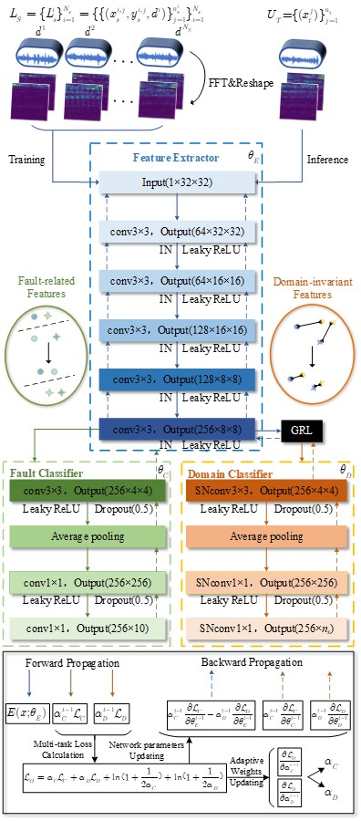
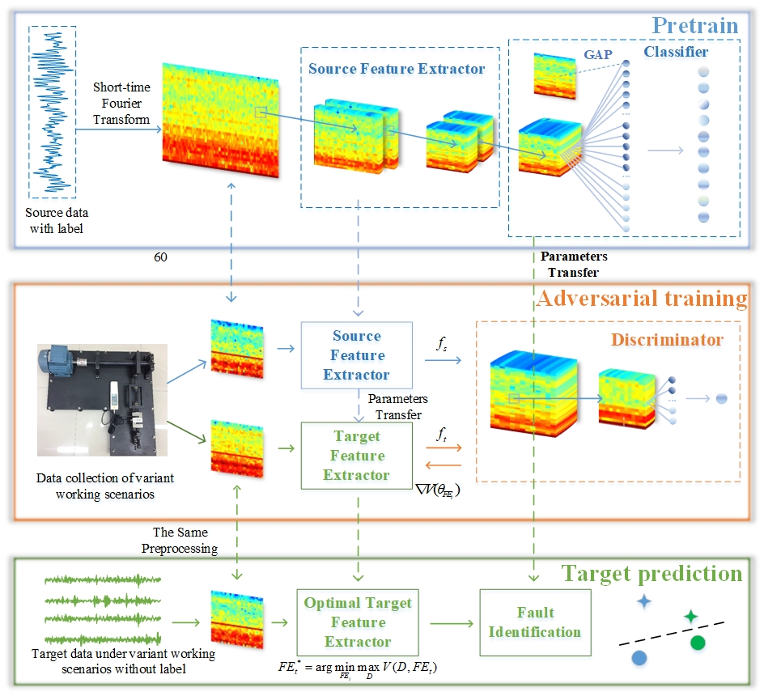
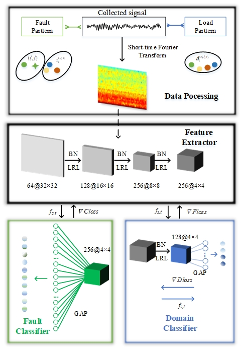
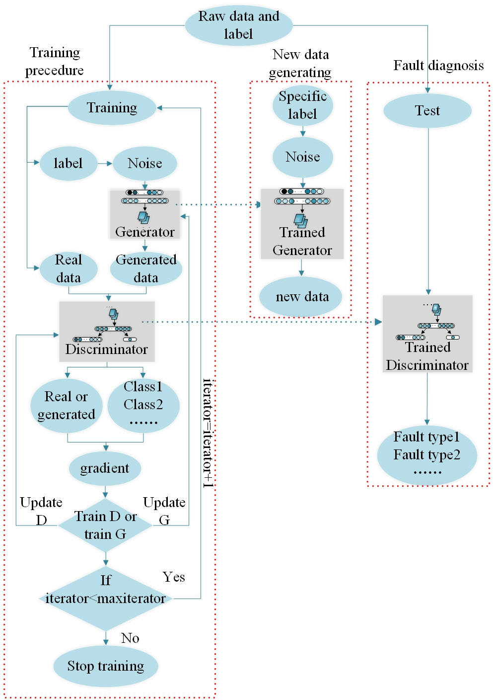

Qi Li李奇Ph.D. Student (expected in 2022)
School of Mechnical and Electric Engineering, |
|


I am currently a third year (2020-2021) Master student in the School of Mechnical and Electric Engineering, Soochow University (SUDA), supervised by Prof. Liang Chen and Prof.Changqing Shen. Before that, I received B. Eng. degree in EE from the Soochow University in 2019.
My research interests include prognostic and health management, deep learning and transfer learning based on domain knowledge.
News!!!
[May 2021] One paper accepted by IEEE TII
[May 2021] Outstanding Student Cadre of Jiangsu Province
[Mar 2021] Best 3-minute thesis presentation of UWA
[Jan 2021] One paper published by MSSP
[Oct 2020] National Scholarship by Ministry of Education of China
[Jul 2020] One paper accepted by IEEE INDIN 2020
[Sep 2019] One paper accepted by MST
[Sep 2019] Deliver a speech at the opening ceremony of SUDA as a graduate student representative
[Sep 2019] Outstanding graduate of Soochow University
Selected Publications [Google Scholar]
|  | Adversarial domain-invariant generalization: a generic domain-regressive framework for bearing fault diagnosis under unseen conditions Liang Chen, Qi Li, Changqing Shen, Jun Zhu, Dong Wang, Min Xia. IEEE Transactions on Industrial Informatics (IEEE TII), 2021 |
|  | Knowledge mapping-based adversarial domain adaptation: A novel fault diagnosis method with high generalizability under variable working conditions Qi Li, Changqing Shen*, Liang Chen*, Zhongkui Zhu.(* indicates equal contribution) Mechanical Systems and Signal Processing (MSSP), 2021 |
|  | Adversarial multi-domain adaptation for machine fault diagnosis with variable working conditions Qi Li, Shuangjie Liu, Bingru Yang, Yiyun Xu, Liang Chen, Changqing Shen 2020 IEEE 18th International Conference on Industrial Informatics (INDIN ), 2020 |
|  | Enhanced generative adversarial networks for fault diagnosis of rotating machinery with imbalanced data Qi Li, Liang Chen*, Changqing Shen*, Bingru Yang and Zhongkui Zhu.(* indicates equal contribution) Measurement Science and Technology (MST ), 2019 |
Honors & Awards
Outstanding Student Cadre of Jiangsu Province, 2021
Outstanding postgraduate cadre of Soochow University, 2021
National Scholarship by Ministry of Education of China, 2020
Outstanding postgraduate of Soochow University, 2020
Special award of graduate academic scholarship, 2019
Speaker of graduate student representative at the opening ceremony of SUDA, 2019
Outstanding graduate of Soochow University, 2019
Activities
-
Journal Reviews
IEEE Transactions on Medical Imaging (TMI)
Mechanical Systems and Signal Processing (MSSP)
IEEE Transactions on Industrial Electronics (TIE)
IEEE Transactions on Instrumentation and Measurement (TIM)
IEEE Transactions on Industrial Informatics (TII)
Measurement
Measurement Science and Technology (MST)
-
Conference Presentations
SDPC 2018, Xi'an, China
IEEE INDIN 2020, Warwick, UK -
Social Activities
Graduate monitor of University of Mechanical and Electric Engineering, 2019 - 2022
Inteview by Student Union of Soochow University, 2021
Opening ceremony speach, 2019